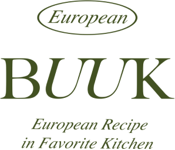
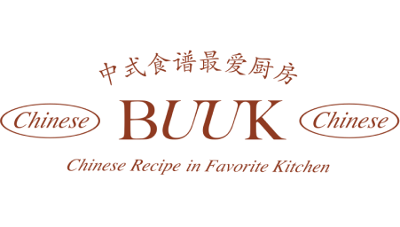
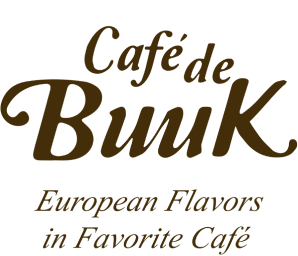

{% set pageInfo = { 'section': 'about', 'title': '회사소개', 'order': '0' } %} {% extends "layout.html" %} {% block content %}
<div class="about-pg">
	<div class="about-wrap">
		<div class="text-group">
			<div class="title-wrap">
				<h2 class="main">ABOUT</h2>
				<p class="sub">European recipe in favorite kitchen</p>
			</div>
			<p class="desc">
				전 세계의 다양한 나라를 컨셉 인테리어로 기획된 유러피안 F&B BUUK(이하 비유유케이)는<span><br /></span>평온하고 품격있으며, 질서정연한 외식업 문화를 만들고
				있습니다.<br />저희는 지속적인 개발과 성장을 통해 대한민국을 대표하는 외식업 브랜드를 만들려고 합니다.
			</p>
		</div>
		<ul class="logo-list">
			<li>
				<figure>
					<div class="img-box"></div>
					<figcaption class="brand">부엌간</figcaption>
				</figure>
			</li>
			<li>
				<figure>
					<div class="img-box"></div>
					<figcaption class="brand">부엌간 차이니즈</figcaption>
				</figure>
			</li>
			<li>
				<figure>
					<div class="img-box"></div>
					<figcaption class="brand">카페 드 부엌</figcaption>
				</figure>
			</li>
		</ul>
	</div>
</div>
{% endblock %}
